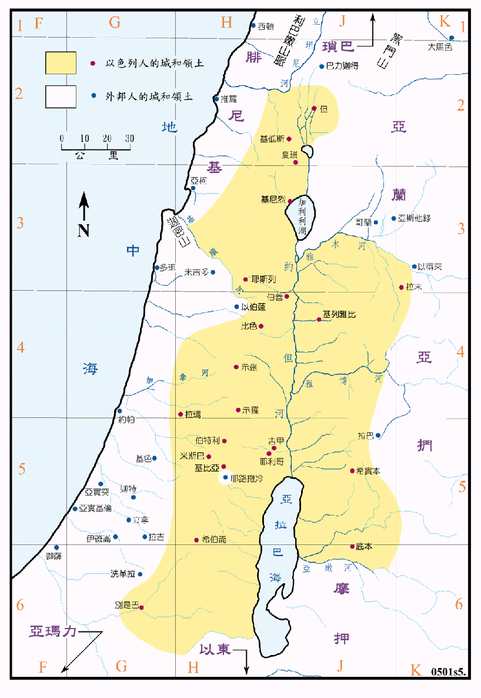

1047～1027BC

行动线说明
| 圣经 | 说明 |
|---|---|
| 撒上14:47-48 | 扫罗王的领土。 |
扫罗在他最盛的二十年间 (1047 至 1027BC)，常常攻击四周的仇敌，收复失土，根据一些资料，在约但河西，他只占领了中央山地，并没有能占领沿海的诸平原，最不理想的是几个战略重镇，如米吉多、他纳、以伯莲，甚至可能包括伯善等，都未能收复，使得国土有被切成两段之势。在北部他占领了加利利山区和但族之地，但是利巴嫩和死海以南之地仍未能收复。耶布斯也未能收复。在约但河东，只占有了雅木河和亚嫩河间之基列地，也未能得到巴珊地，这与约书亚时代时的所得之地比起来，又更小了一些。
扫罗是以色列的第一个王，看来他并没有建立政府的组织，也没有设立首府，比起大卫王来，是差了很多。